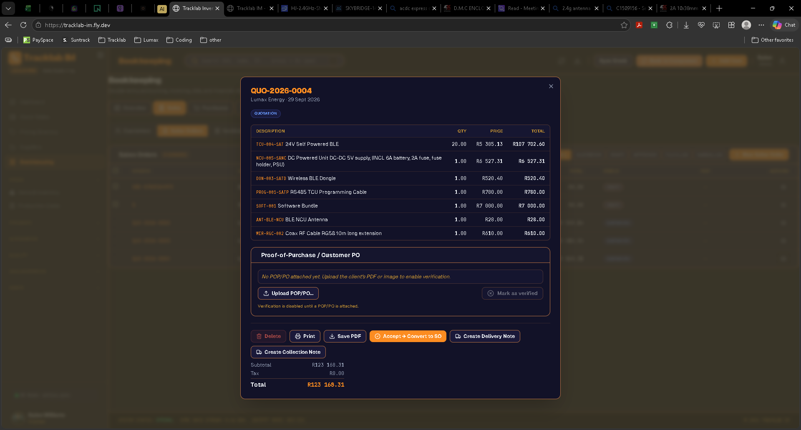

🆕 What's New (v2.8)
A flow-first release. Where v2.7 shipped brand-new pro-ERP features (quotations, bank rec, credit notes, landed cost, VAT201), v2.8 collapses the daily journey between them: a "Needs attention today" strip on the dashboard, Cmd+K jumps to any doc number, unified Customer / Vendor 360 drawers, a slimmed-down Item Detail with tabs, PDF exports on every financial report, and a rebuild of how VAT is presented on quotes so mixed-rate lines can never look like a double-charge.
Dashboard — "Needs attention today" strip
New panel at the very top of the dashboard turns the passive stats board into an action queue. Five click-through cards, refreshed every 60 seconds:
- Quotations awaiting reply — count + open value. Click → Sales > Orders filtered to QUOTATION.
- Sales orders with backorders — any SO where reservations exceed on-hand.
- Overdue invoices — count + total balance owing.
- Bills due this week — anything AWAITING_PAYMENT / PARTIAL / OVERDUE with a due date ≤ today+7.
- Critical low stock — parts flagged critical on the inventory grid.
Cards render even at zero so the layout doesn't shift; when every queue is empty the strip shows a "You are clear" state with a green tick.
Cmd+K — global doc-number search
The command palette (⌘K / Ctrl+K, top of the app) already searched pages, items, clients, and suppliers. It now also finds any bookkeeping doc by its number. Type INV-, SO-, PO-, BILL-, QUO-, CN-, or DN- and every match surfaces grouped by kind, with client/supplier and status in the subtitle.
- Fuzzy match also runs against the subtitle so "lumax invoice" or "digikey bill" filter correctly.
- Enter jumps to the correct sub-tab (Sales > Invoices for an
INV-, Purchases > Bills for aBILL-, etc). - Doc index is fetched once per palette-open and cached for 60 s, so repeated ⌘K is instant.
Customer 360 drawer
Bookkeeping > Sales > Customers — click any row (or the 👁 icon) and a right-side drawer opens with everything about that customer in one place. Header identity strip (name, contact, email/phone/VAT/address, status). Four metric cards up top: Open AR · Overdue count + value · Open orders (+ quotations) · Lifetime revenue.
- Tabs: Overview · Orders & Quotes · Invoices · Payments · Credit Notes · Deliveries · Statement. Each shows a count badge.
- Overview renders a chronological activity feed mixing every doc kind, plus an "Overdue invoices" panel when any are past due.
- Statement tab has the existing PDF download built in — no more hunting for the 📄 icon on the list.
Answers "what's happening with Lumax right now?" in one click instead of jumping across four sub-tabs.
Vendor 360 drawer
Bookkeeping > Purchases > Vendors — same drawer pattern as Customer 360, mirror-symmetric for the purchases side. Metrics: Open AP · Overdue bills · Open POs · YTD spend. Tabs: Overview · Purchase Orders · Bills · Payments · Expenses. Website link on the row still opens externally without popping the drawer.
Item Detail — three-tab view mode
The Item Detail modal grew to five stacked sections in view mode, which made scrolling the norm to reach the description. View mode is now split into three tabs — Overview / Parameters / Sourcing — with the headline metrics row (Stock / Cost / Holding value / Status / Category + reservations) pinned above the tab strip so those numbers are always one glance away.
- Overview — description, project, manufacturer, supplier, comments.
- Parameters — CAD footprint, value/size, tolerance, bulk pricing.
- Sourcing — packaging, last order date/qty, datasheet link.
Edit mode is untouched — you edit less often than you view, so the full form still makes sense there.
Financial reports — PDF export & headline metrics
P&L, Balance Sheet, and Trial Balance now render to PDF via the same shared brand-header helper VAT201 uses. Each report also gains a headline metric strip so the important numbers show without scrolling:
- P&L: Total income · Total expenses · Net profit (with margin %).
- Balance Sheet: Total assets · liabilities · equity · a live "A = L + E" balanced check that renders a green tick or the delta when the ledger drifts.
Hand any of the three to your accountant as a PDF from the Reports tab.
Quote / SO — line prices now display Excl. VAT
Before v2.8, the line-item "Total" column on quotes and SOs showed the stored gross figure (VAT-inclusive on tax-inclusive lines). A customer adding the column arrived at the grand-total figure, then saw the summary add VAT on top — reading as a double-charge. The column now shows net (Excl. VAT) prices, so the sum equals the Subtotal exactly. Column headers relabelled Price (Excl. VAT) / Total (Excl. VAT). Summary reads Total (Excl. VAT) · VAT amount · Total.
Quote / SO — per-line VAT column & mixed-rate summary
Every line-item row now shows the VAT status right in the table: 15% for standard-rated, Exempt (amber) for labour / financial services / residential rent / education, 0% (zero-rated) (secondary) for exports and basic foods. This ends the class of finance-team flag where the top-level VAT / Subtotal ratio isn't a clean 15% because one or more lines are non-standard.
When any line is Exempt or Zero-rated, the summary block splits per bucket so an auditor sees exactly where each figure came from:
- Excl. VAT — Standard-rated
- Excl. VAT — Exempt supplies
- Excl. VAT — Zero-rated
- Total (Excl. VAT)
- 15% VAT (Standard-rated only)
- Total
On a uniform-rate quote (all lines Standard) the summary collapses back to the simple three-line form — no visual noise for the common case.
Quote / SO — tax classification round-trips edits & auto-fulfil
Previously, picking Exempt or Zero-Rated on a quote line silently reverted to Standard on save (the client_order_items table didn't carry the tax field). Fixed:
- Tax classification is now stored per line and re-hydrates when you re-open the editor.
- Auto-fulfil (quote / SO → invoice) copies the tax classification straight onto the generated invoice, so an Exempt quote → Exempt SO → Exempt invoice, and the Exempt total flows through VAT201 as an informational memo (not as Box 2 Zero-Rated).
- New line items now default to Standard VAT (15%) instead of "No tax" — the SA legal default for a taxable supply. Manual override to Exempt / Zero-Rated / None still one click.
VAT201 — Exempt vs Zero-Rated properly separated
Prior versions bucketed Exempt and Zero-Rated together on Box 2 because both have rate = 0%. VAT201 now aggregates per-line using a new tax_rates.kind column, so Standard-rated / Zero-rated / Exempt each land in the right SARS box:
- Box 1 & 4 — Standard-rated sales + output VAT.
- Box 2 — Zero-rated sales (turnover contributor, taxable at 0%).
- Informational memo — Exempt supplies (sales) and Exempt purchases. Not a SARS box; shown so you can see they're being handled separately.
SO editor — Admin edit for QUOTATION & DRAFT
Admins now see an Edit button on the SO/Quote viewer when the row is QUOTATION or DRAFT. Editor opens pre-filled from the current row; save PUTs the full doc (header + line replacement) atomically. Once an order moves past DRAFT (fulfilment started), editing is blocked with a 409 — a running fulfilment can't be silently rewritten from under picking or invoicing.
PO / Bill line item — free-typed SKU allowed
The SKU / Part# input on purchase-side line editors now accepts free-typed values, not only rows that exist in inventory. A supplier's own SKU that isn't yet in your catalogue no longer forces you to bail out and add the item first.
🆕 What's New (v2.7)
A very large release — five major pro-ERP features (Quotations, Bank Reconciliation, VAT201, Credit Notes, Landed Cost), a full pipeline of Save-PDF exports, live cross-user sync so an admin's import updates every open browser within seconds, and a wave of quality-of-life polish on the Add SKU form, inventory grid, and sales-order flow.
Sign-in screen — the entry point for every session (unchanged, but included here for reference).Sales Orders → Quotations
The sales-order editor now has a Save as Quotation toggle. When on, the row is created with status QUOTATION, numbered QUO-YYYY-NNNN from its own sequence, and — critically — does not reserve stock.
- Quotations are proposals, not commitments. No inventory movement until the client accepts.
- Every quote gets its own doc series so a QUO number never collides with an SO number.
- On the SO viewer, a green Accept → Convert to SO button flips status to
DRAFT, mints a fresh SO number, and writes the deferred reservations transactionally. QUOTATIONis a new status pill (blue) and a new filter chip on the SO list.

Quotation viewer — QUO-YYYY-NNNN doc series, line items, and the green Accept → Convert to SO action that mints the SO number and writes reservations.Auto-Fulfil macro (single & batch)
The SO viewer has a new Auto-Fulfil… button that runs the whole sales-order fulfilment chain in one transaction: create invoice → send (posts journal, decrements stock, releases reservation) → create delivery note → issue + complete → optional full-amount payment received. Every stage is a checkbox — turn any of them off and the rest still work.
- Batch mode: tick multiple SO rows in the list, and an Auto-Fulfil N… button appears next to New Sales Order. It runs each order in its own transaction so a bad row (missing lines, wrong status) shows as
FAILEDwithout dragging the rest down. Results table names every created invoice / delivery / payment number. - Safety: if the invoice already booked stock out, the delivery-note lines skip a second decrement automatically.
Bookkeeping — Save PDF everywhere
Every doc viewer in Bookkeeping has a Save PDF button next to Print. Clicking it downloads a properly-typeset PDF directly to your machine — no print-dialog dance, no "Save as PDF" destination picker.
- Sales orders →
sales-order-SO-2026-0007.pdf - Quotations →
quotation-QUO-2026-0002.pdf - Invoices →
invoice-INV-2026-0011.pdf(with Amount Paid + Balance Due lines) - Bills →
bill-BILL-2026-0004.pdf - Delivery notes →
delivery-note-DN-2026-0004.pdf(Serial Numbers column, no money) - Collection notes →
collection-note-CN-2026-0001.pdf - Credit notes →
credit-note-CN-2026-0001.pdf - Customer statements (from the Customers tab) →
customer-statement-Lumax-Energy-2026-01-31.pdf - VAT201 return →
vat201-return-2026-01-01_2026-03-31.pdf
Every doc uses the shared TRACKLAB brand header, autoTable line items, and SANS 24 money formatting so figures match the on-screen totals exactly.
Bank Reconciliation
New tab under Bookkeeping → Accounting → Bank Reconciliation. Reconcile a bank statement in three steps:
- Import CSV — pick the bank account, drop the file. The importer sniffs date / description / amount / reference columns (override if the guess is wrong) and normalises common date formats and comma decimals.
- Auto-match runs immediately on save. Three passes: doc number found in the reference (100% confidence), exact amount within ±3 day window (90%), same for expenses (85%). Only unmatched lines are touched, so anything you resolved by hand stays put.
- Reconcile per line — Pick a specific payment / expense, or Ignore for legit uncleared items. Complete when opening + lines = closing and every line is matched. Reconciled statements lock so retro edits can't quietly rewrite next month's opening balance.
VAT201 return
Bookkeeping → Reports → VAT201. Pick a period, hit Run. Dashboard cards for Output tax (Box 4) / Input tax (Box 15) / Net VAT / Zero-rated sales. Box breakdown table walks through Box 1, 2, 4, 14, 15 the same way SARS's eFiling form is laid out. Two supporting lists at the bottom expand every invoice and every bill that fed the numbers so an auditor can drill in.
- Only rows with a live ledger status (invoices SENT / PARTIAL / PAID / OVERDUE; bills AWAITING_PAYMENT and onward) contribute. DRAFT and VOID are excluded.
- Export CSV gives the full detail for review.
- Save PDF produces an auditable printable version with a "verify each box on SARS eFiling before submission" disclaimer baked in.
Customer statements
On the Customers tab, every row now has a 📄 Statement button. Click it and a full PDF statement downloads immediately:
- Interleaves every invoice (debit) and payment received (credit) chronologically with a running balance from opening.
- Aging matrix — Current / 1–30 / 31–60 / 61–90 / 90+ — on any still-open amount.
- Sorted list of overdue invoices with days-overdue.
- Filename:
customer-statement-<client-name>-<YYYY-MM-DD>.pdf
Combined with the new credit-limit feature (planned next), this makes end-of-month collections a two-click job.
Credit Notes
New tab under Bookkeeping → Sales → Credit Notes. Refunds / returns / write-offs now have a proper primitive:
- Create one directly from an invoice viewer via the new Issue Credit Note button. Prompts for a reason and whether to restock returned lines. Every line pre-fills from the invoice at its original price.
- On Issue, the server posts DR Sales Returns (4050) + DR VAT, CR AR; restocks the flagged lines; and auto-applies the credit against the source invoice up to its remaining balance (dropping status back to PARTIAL or PAID).
- Any credit left over can be Applied against another open invoice for the same client, or Refunded as cash (DR AR, CR Bank).
- Status chain:
DRAFT → ISSUED → APPLIED / REFUNDED. - Save PDF includes Applied + Refunded + Remaining rows.
Landed Cost
New tab under Bookkeeping → Purchases → Landed Cost. Bolt freight / duty / bank-charge bills onto the underlying goods bill so each unit's cost reflects its true landed price — not just what Digi-Key charged.
- Record the goods bill as normal (e.g.
BILL-2026-0042at $52.20 for 5000 resistors). - Record the freight and duty bills separately (
BILL-2026-0043R850,BILL-2026-0044R1240). - Create a Landed Cost Batch — pick the goods bill on the left, the addon bills on the right (each tagged Freight / Duty / Bank / Other), and an allocation method (BY_VALUE = proportional to line total, BY_QTY = per unit).
- Preview shows every affected line's original → new unit cost + rounding delta.
- Post writes a snapshot per line, rewrites
inventory.current_cost_dollar, and posts DR Inventory / CR Default Expense for the total addon.
Every downstream COGS + margin report picks up the landed cost automatically — no follow-up steps.
Inventory grid — LED colours, reserved quantities, prefix picker
Three related upgrades on the Items page:
- LED colour swatches — every LED row (Inventory grid, Search results, Item Detail modal, BOM Manager audit, Kit Booking Allocate modal, Alternates, Pick & Place, Projects, Stock Tables, Pricing, Bulk Pricing Wizard, Procurement Shortage) shows a coloured dot next to the name with the detected colour (RGB / bi-colour split-fill for multi-colour LEDs). Detection reads name + description; non-LED rows are unaffected.
- Reserved qty — cards for parts held by open sales-order reservations now show "N reserved · M available" under the stock number. If reservations exceed on-hand, that becomes a red OVERBOOKED · short K pill. Same breakdown surfaces on the Item Detail modal and the BOM Manager audit.
- Add SKU stock-code prefix picker — in the New SKU modal, next to the Stock Code input, is a dropdown of every 3-letter prefix already used in inventory (ENC → ENC-004 (127), LED → LED-014 (9), etc.). Picking a prefix fills the input with the next available number in that family.
New SKU — supplier PN + MFN PN, comboboxes
The Register New Inventory Component modal has grown up:
- Supplier part number input (e.g.
STM32G031F6P6-NDfor Digi-Key) and Manufacturer part number input (e.g.STM32G031F6P6) sit in a 2-column grid under the Preferred Supplier picker. They populatesup_pn_1andman_pn_1. Edit mode reads from the same slots so a round-trip preserves everything. - Category Class is now a type-to-search combobox. Filters as you type; if what you typed isn't in the list, the top row of the dropdown becomes "Add '<typed>' as new category" — Enter or click commits it. Same combobox in the Edit form.
- Preferred Supplier is the same combobox in strict mode: filter as you type against the live suppliers list, but you can't commit a supplier that doesn't exist. If the supplier is genuinely new, add them under Bookkeeping → Vendors first — the hint in the empty dropdown says exactly that.
- Initial Stock Qty now accepts 0 (registering a SKU before its first PO arrives is a normal flow).
- Line-item SKU inputs on invoice / bill / PO editors also accept free-typed values now, so a supplier's own SKU that isn't in inventory yet doesn't force you to bail out and create the item first.
Import CSV — XLSX support, admin-gated, auto-backup
Bulk import on the Items page picked up three related upgrades:
- XLSX and XLS accepted alongside CSV. SheetJS parses the workbook client-side, converts the first sheet to CSV in memory, and the existing preview + upsert path handles it.
- Admin-only. Only accounts with role admin see the Import CSV button; the same button is available for Export CSV to everyone.
- Two backup files download automatically before the DB write:
inventory_backup_<timestamp>.csv(full state before) andinventory_import_<timestamp>.csv(exactly the batch being applied). Rollback is a re-import of the backup file.
Live cross-user sync
Every 2xx write to any major entity now bumps a shared version counter on the server. Every open browser polls that counter every 25 seconds and, when anything moves, silently re-runs the initial bootstrap. So when an admin lands a CSV import, edits a client, posts a bill, or accepts a quotation, every other logged-in tab picks up the change within a single tick — no refresh needed.
Coverage: inventory · clients · client_orders · suppliers · bookkeeping (invoices / bills / POs / payments / dispatch) · projects · production_kits · BOM · pick-place.
Supplier BOM Generator
Manufacturing → Supplier BOM Generator. Ported from the legacy Python desktop tool. Upload a pick-and-place BOM CSV; the tool resolves each part against the three inventory supplier-PN columns (Mouser = sup_pn_1, DigiKey = sup_pn_2, LCSC = sup_pn_3) with an equivalent-reel fallback for empty columns.
- Auto-skips DNF rows during parse. Merges duplicates by summing qty-per-PCB.
- Per-supplier tabs with colour-coded rows: red for missing PN in that supplier, "NO PART" pill for parts unlisted at all three.
- Bulk toggles per tab: Check all / Uncheck all / Check only rows with PN.
- Board qty spinner multiplies through to every exported row.
- Exports in each supplier's preferred upload shape: Mouser
PN|qty, DigiKeyQuantity,"Part Number", LCSCComment,Designator,Footprint,LCSC Part #,Quantity.
Money formatting standard (SANS 24 / ISO 31)
Every user-visible money and grouped-count display now routes through one shared formatter (src/lib/formatMoney.ts). Standard is South African: non-breaking-space thousands separator, dot decimal, no space between currency symbol and first digit. R1 234 567.89, -$89.00. Every card, table, PDF, and CSV picks it up automatically so a value never appears with one grouping on the dashboard and another on the invoice.
Alternates — Simulation Map
In Manufacturing → Component Alternates, the "Simulation map active" chip in each group's footer is now a real button that opens a radial SVG view of the group: the highest-stock alternate at the centre, every other alternate arranged around it. Node radius scales with stock level, fill colour reports stock health (green / amber / red), and clicking a node opens that SKU in Item Detail.
🆕 What's New (v2.6)
One account, one active device
Signing in on a new device now automatically signs the previous device out.
- Log in on your phone → your desktop tab shows a toast reading "Signed out — this account signed in from another device" and drops back to the login screen.
- Detection happens on a 30-second heartbeat and immediately when you refocus the older tab.
- Explicit logout on either device only signs that one device out.
Mobile-optimised UI
The app now detects screen size (breakpoint 768 px) and adapts the header and layout for phones.
- The top-bar action buttons collapse to icons on small screens, freeing horizontal space.
- A new
useIsMobilehook exposes the breakpoint to any component that needs to reflow. - The rest of the pages are being reflowed page-by-page — check back for further mobile improvements.
Smarter Live Price Lookup
The Pricing Directory now recognises what kind of code you typed and routes the query intelligently instead of blindly asking every supplier.
- Internal SKU → MFN: if you type one of your own stock codes, the system looks up its stored manufacturer part number and searches suppliers by that instead.
- DigiKey stock codes (anything ending in
-ND): DigiKey is asked first to resolve the code to the real manufacturer part number, and every other supplier is then queried for that real MPN. Comparable quotes, no double DigiKey call. - LCSC stock codes (
Cfollowed by digits, e.g.C105882): only LCSC is queried. Other distributors would fuzzy-match to unrelated parts (a 100 nF capacitor was once priced at $241 via Pasternack this way). - Full supplier fan-out now covers DigiKey, Mouser, LCSC, Nexar (Octopart aggregator: Arrow, Heilind, Avnet, …), Element14/Farnell/Newark and TME.
- Multi-currency: non-USD quotes (GBP, EUR, PLN, CAD, AUD, SGD) are converted to ZAR/USD automatically. Exchange rates refresh daily via a single call and are cached for 30 days.
API Keys tab
Provider credentials for every supplier can be entered and rotated from inside the app.
- DigiKey now uses OAuth2
client_credentialswhere available — no more manual re-authorisation every day. Fall back to the 3-legged flow withnpm run digikey:authorizeif your account doesn't have it. - TME uses its Private Key + Application Secret; the workflow help text now matches the current TME portal.
- The tab is protected against browser autofill hijack, so entering login credentials in your password manager will no longer redirect you to the search view.
Distributor stock code detection
Roughly 25% of items in the catalogue carry a distributor stock code in the manufacturer part number field. Live Price Lookup now handles those gracefully as described above; over time, cleaning those fields to the real MPN will give you the best cross-supplier price coverage.